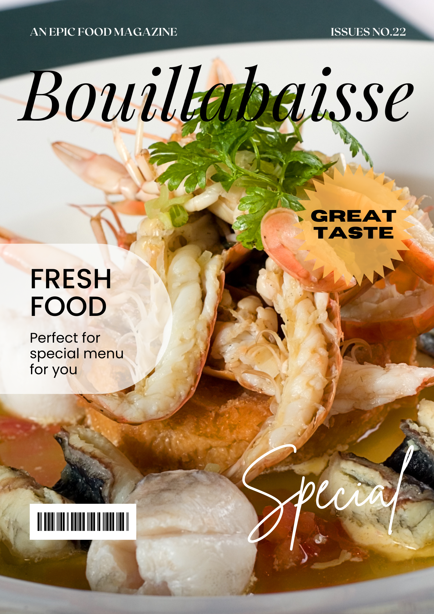
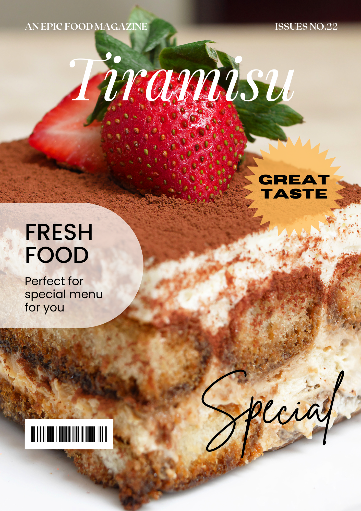

- 
- 


Experience the romance and allure of Paris, the City of Light. Admire iconic landmarks, such as the Eiffel Tower and Notre-Dame, stroll along the Seine River, and indulge in French cuisine. Explore world-class museums like Musée d'Orsay and immerse yourself in the city's vibrant nightlife. Paris awaits your discovery.
Read More-


Kare-kare is a classic Filipino dish that boasts a rich and savory peanut-based sauce paired with tender oxtail, tripe, and vegetables. Its complex flavors are enhanced by bagoong, a fermented shrimp paste, creating a deeply satisfying and unforgettable meal.
Read MoreRamen is a beloved dish that has taken the world by storm with its hearty broth, tender noodles, and endless topping possibilities. Whether you prefer a classic pork-based broth or a spicy vegan version, ramen is the ultimate comfort food that satisfies every craving.
Read MoreBouillabaisse is a traditional French fish stew that captures the essence of Mediterranean cuisine with its rich and flavorful broth infused with herbs and spices. This iconic dish is a feast for the senses, with tender seafood and crusty bread to soak up the broth.
Read MoreTiramisu is an indulgent Italian dessert that perfectly balances sweetness and richness. Layers of espresso-soaked ladyfingers and creamy mascarpone cheese are topped with cocoa powder, creating a decadent dessert that will transport your taste buds to the heart of Italy.
Read MoreHalo-halo is a colorful Filipino dessert that features layers of shaved ice, sweet beans, jellies, and fruits, all topped with a generous helping of evaporated milk and ice cream. This refreshing and sweet dessert is the perfect way to beat the heat and enjoy a taste of the Philippines.
Read MorePalawan, Philippines: A pristine island paradise with crystal-clear waters, limestone cliffs, and lush green forests. Experience untouched natural beauty, biodiversity, and a range of activities for adventure-seekers, nature lovers, and beach bums alike. Don't miss out on this tranquil destination with rich cultural heritage, delectable cuisine, and friendly locals.
Read MoreDiscover a paradise on earth in the Maldives. With crystal clear waters, pristine white sandy beaches, and unparalleled luxury, this island nation is the perfect destination for those seeking relaxation and adventure. Indulge in world-class diving and snorkeling, enjoy delectable cuisine, or simply unwind with a cocktail and soak up the sun. From breathtaking sunsets to overwater villas, the Maldives is an escape like no other.
Read MoreBarcelona, the vibrant capital of Catalonia, is a city of boundless energy and architectural wonders. Marvel at the surreal creations of Gaudí, stroll the bustling Las Ramblas, and savor the flavors of Catalonia's rich cuisine. Sun, sand, and culture converge in this dynamic Mediterranean gem.
Read MoreGrindelwald, Switzerland offers breathtaking views of the snow-capped Alps and picturesque landscapes. Outdoor enthusiasts can enjoy skiing, hiking, and paragliding, while culture lovers can explore the town's charming architecture and quaint shops. A true Swiss gem, Grindelwald is a must-visit destination.
Read MoreSingapore is a vibrant, cosmopolitan city-state known for its modern architecture, delicious cuisine, and diverse culture. From the iconic Marina Bay Sands to the lush Gardens by the Bay, there's something for everyone in this dynamic destination.
Read MoreMt. Fuji's majestic beauty and cultural significance make it a must-visit destination in Japan. Witness the stunning sunrise from its summit or explore nearby lakes and hot springs. Immerse yourself in Japanese culture and cuisine while experiencing the breathtaking scenery of this iconic mountain.
Read More